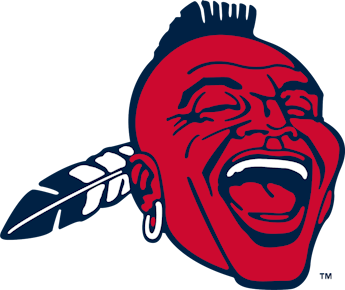
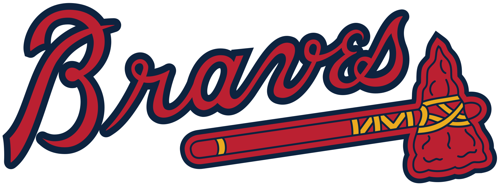

The Atlanta Braves started in Boston in 1871. The team moved to Milwaukee in 1953. The team moved to Atlanta in 1966. The Braves have won four World Series titles. Their World Series wins were in 1914, 1957, 1995, and 2021.
Boston Braves - 1871 to 1952
Milwaukee Braves - 1953 to 1965

Atlanta Braves - 1966 to now
